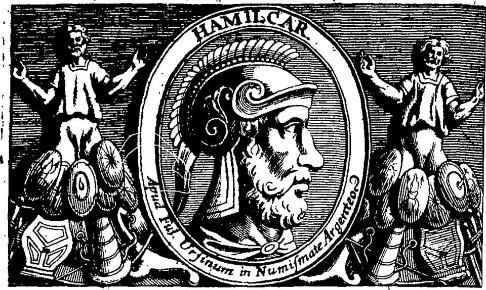

Hamilcar Barca

Image issue de Wikimedia Commons — domaine public
Qui est Hamilcar ?
Hamilcar Barca naît vers 275 av. J.-C. à Carthage. Son surnom, Barca, signifie "foudre" en punique — un nom qui résume parfaitement son caractère offensif et impétueux sur le champ de bataille. Il est le père d'Hannibal, Hasdrubal et Magon, trois frères qui marqueront tous l'histoire des guerres puniques.
Hamilcar est l'un des rares généraux carthaginois à avoir tenu tête à Rome avec succès. Dans un contexte où Carthage perdait la première guerre punique sur mer, il fut l'un des seuls à maintenir une résistance efficace en Sicile, remportant plusieurs victoires contre les Romains malgré des moyens limités.
Source : Wikipedia — Hamilcar Barca
Ses accomplissements
Nommé commandant en Sicile en 247 av. J.-C., Hamilcar mène une guérilla brillante contre les Romains depuis la montagne d'Ercté, puis depuis le mont Éryx. Il harcèle les côtes italiennes, remporte des escarmouches, et prive Rome de la tranquillité qu'elle espérait. Malgré cela, la défaite navale de Carthage aux îles Égates en 241 av. J.-C. le contraint à négocier la paix.
Après avoir maté la révolte des mercenaires (241–238 av. J.-C.) qui menaçait d'anéantir Carthage, il part conquérir l'Espagne à partir de 237 av. J.-C. En quelques années, il étend considérablement la zone d'influence carthaginoise dans la péninsule ibérique, ouvrant la voie à l'exploitation des riches mines d'argent qui refinancent Carthage et permettront à son fils de faire la guerre à Rome.
Source : Wikipedia — Hamilcar Barca
Un héritage immense
Hamilcar meurt en 228 av. J.-C., noyé dans une rivière lors d'une bataille en Espagne, en servant de diversion pour permettre à ses fils de s'échapper. Il ne verra jamais la vengeance qu'il a préparée contre Rome, mais c'est lui qui en a posé toutes les bases.
Sans Hamilcar, pas d'Espagne carthaginoise, pas de mines d'argent, pas d'armée aguerrie — et pas d'Hannibal. Il est le véritable architecte de la deuxième guerre punique, même s'il ne l'a pas menée. Les Romains le craignaient de son vivant et continuèrent de respecter sa mémoire après sa mort.
Source : Wikipedia — Hamilcar Barca